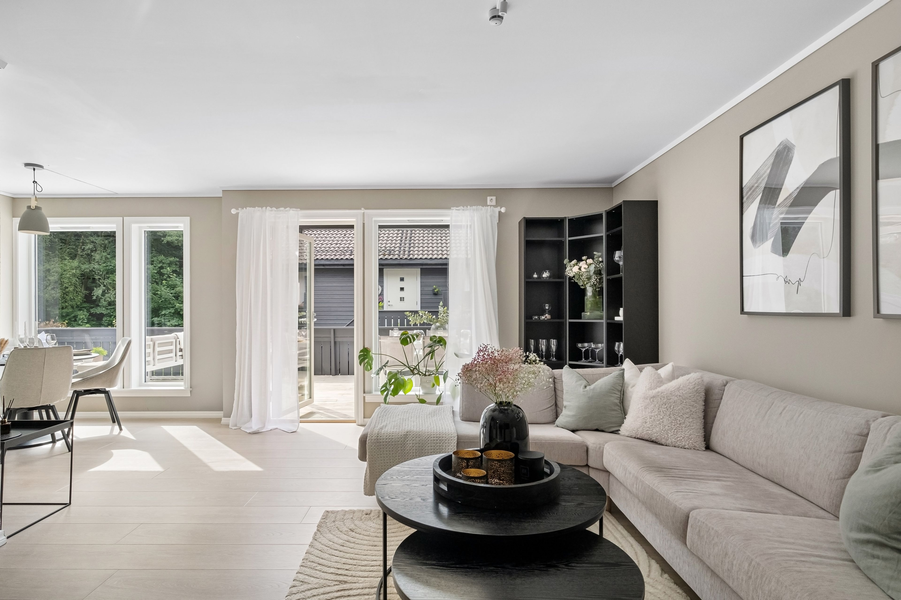
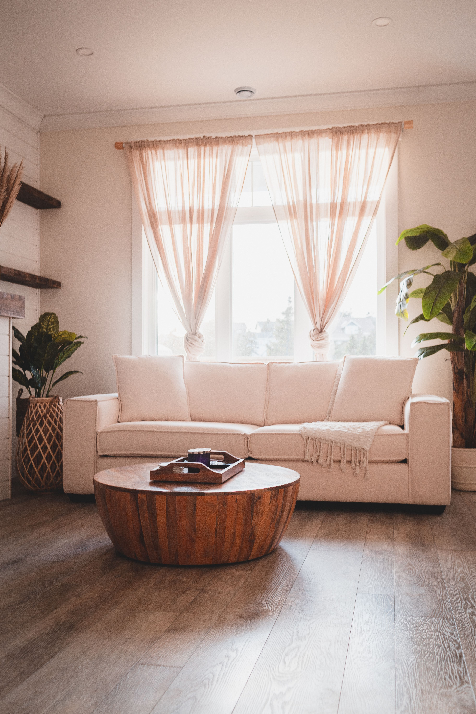
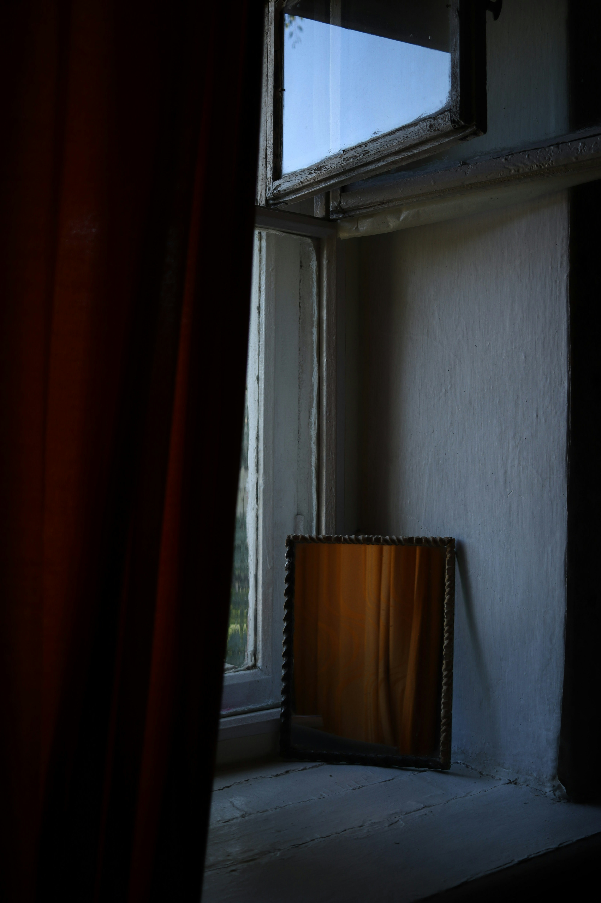

Home décor consultation
We talk through the room, samples, and finishes — then recommend sheers, drapes, or a layered look that matches your space.
Complimentary visit
Our specialists come to you: measure, style, and help you choose curtains that fit your light, lifestyle, and budget — from first idea to installation.

We talk through the room, samples, and finishes — then recommend sheers, drapes, or a layered look that matches your space.

A technician takes precise widths and drops, including bay and awkward openings, so the panels sit as if they were always meant to be there.

Once you approve, we produce, deliver, and hang — tracks, rods, and headings included in the plan.
Yes. Measurement and décor advice at home are complimentary — even if you don’t confirm an order that day. You only pay when you choose to go ahead with the curtains.
Place the rod about 10–15 cm above the frame and 15–20 cm beyond each side — it makes the window feel larger and lets more light in when open. Measure the rod width, then multiply by 1.8–2.5 for fullness. Length is from the rod to where you want the hem: hover, kiss, or puddle. Prefer us to do it? Book a visit and we measure for you.
Start with the room you already have: walls, sofa, floor. Neutrals and complementary shades rarely fight. Pattern should echo one existing element — a cushion, a vein in the marble — not introduce a third story. We bring curated samples so you see fabric in your actual daylight, not under showroom lamps.
Sheers filter light and keep a soft privacy. Blackout (or a blackout lining) is for sleep, cinema, and strong sun. Most well-dressed windows layer both on one track or double rod: daytime glow, night hush. Lining also adds weight, insulation, and helps colour last.
Ready-made is fast for standard sizes. Made-to-measure is our specialty when every window is different: you choose fabric, heading (pinch, pencil, wave, eyelet), lining, and finish. If the glass is tall, off-centre, or next to a radiator, custom is the practical choice — not just the luxurious one.
Eyelet (grommet) and rod-pocket panels slide on with almost no tools. Pinch, pencil, and wave headings look more tailored and usually sit on rings or a track — we install those with the hardware. Tell us how often you’ll open them; daily use prefers a track that glides.
Yes — for studio orders we measure, manufacture, deliver, and fit. If you shop a simple ready-made look yourself, we still guide you by phone or visit. Professional fitting is strongly recommended for tracks, blackout, and anything floor-length.
Clear the window a little, note how the room is used (sleep, living, work), and have a rough budget in mind. Photos of the space help if someone else in the house decides later. We’ll bring samples. You don’t need to know fabric names — just the mood you want when the light comes in.
A consultant, a measuring tape, and fabrics that belong to your rooms — not the catalog.
Request a consultation